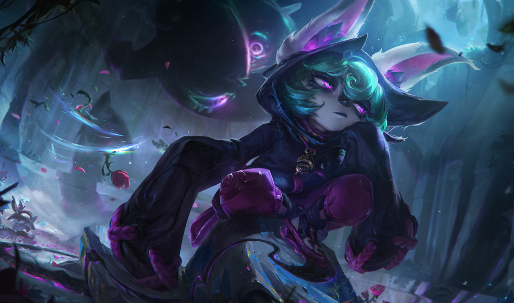

Mid Lane
Mid lane is one of the most versatile roles, with all sorts of different champions being viable, mages, assassins, etc. Mid lane also has the most ease of access to the other lanes and to objectives, allowing them to play a key part in other lanes as well, similar to junglers. I’ll be talking about 2 different mid laners, Talon, and Vex.
Talon

Basic Abilities
Talon’s passive is Blade’s End. Talon’s abilities apply one stack of his passive on enemy champions. Once he has applied 3 stacks, his next attack will cause them to take extra damage.
Talon’s first basic ability is Noxian Diplomacy. Talon stabs a unit, if the unit is close to him the ability will crit and do more damage. If they are not close to him, he will leap to the target, dealing reduced damage.
Talon’s second basic ability is Rake. Talon throws blades towards the enemy, dealing damage. The blades will stop at a certain distance, then return to Talon, dealing damage again.
Talon’s third basic ability is Assassin’s Path. Talon jumps over any terrain or structure. You cannot jump over the same terrain for a long amount of time.
Ultimate
Talon’s ultimate is Shadow Assault. Talon creates a circle of blades around him, dealing damage. He also becomes invisible and gains movement speed. After a few seconds, the blades return to Talon, dealing damage again. Attacking an enemy will cancel the invisibility and make the blades return immediately.
Vex

Basic Abilities
Vex’s passive is Doom N’Gloom. After 25 seconds, Vex’s next basic ability will fear enemies, causing them to run away from Vex. If an enemy champion dashes near Vex, they are applied a mark that makes Vex’s next attack or ability do more damage againist them.
Vex’s first basic ability is Mistral Bolt. Vex fires a projectile that will speed up mid flight.
Vex’s second basic ability is Personal Space. Vex deals damage all around herself as well as grants herself a shield for a few seconds.
Vex’s third basic ability is Looming Darkness. Vex creates an area that will damage and slow enemies hit by it. It will also apply the same mark champion’s get from dashing.
Ultimate
Vex’s ultimate is Shadow Surge. Vex fires a long range projectile that will mark an enemy champion if hit. Vex can recast this ability to consume the mark and dash to the enemy, dealing damage.
You can read more about Talon and Vex on the official League of Legends website.